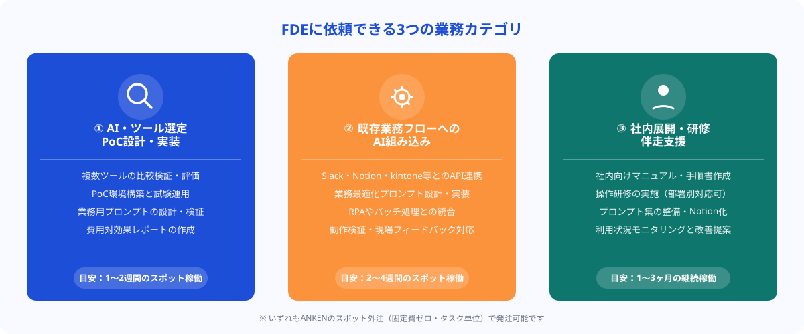
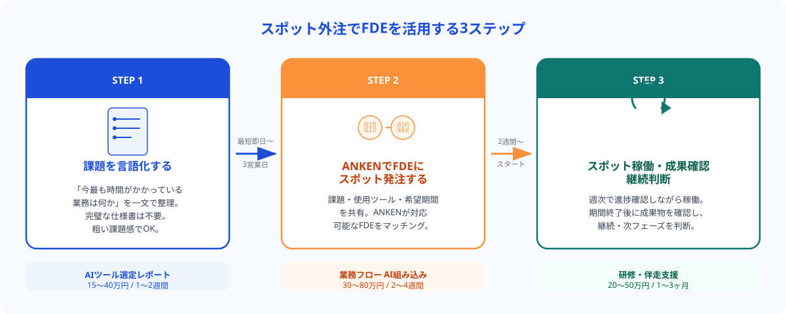

FDEに依頼できる3つの業務カテゴリ
FDEへの依頼は、大きく3つのカテゴリに整理できます。通常のシステム開発会社が苦手とする「業務文脈の理解」と「現場への橋渡し」を同時にこなせる点が、FDEを活用する最大のメリットです。

カテゴリ①：AI・ツール選定とPoC設計・実装
「ChatGPTを社内で使いたいが、どう導入すれば業務に合うか分からない」「複数のAIツールを比較して最適なものを選んでほしい」——こうした初期フェーズの課題に対応するのがFDEの得意領域の一つです。業務フローの理解、ツールの技術的な評価、PoC（概念実証）の実装までを一貫して担当します。
具体的な依頼例としては、AIツール選定レポート作成・比較検証、PoC環境の構築と試験運用、業務用プロンプトのドラフト作成と検証などがあります。このフェーズは「まず2〜4週間のスポット稼働で試してみる」という使い方と非常に相性がよいです。
カテゴリ②：既存業務フローへのAI組み込み
PoCが完成した後、実際の業務フローにAIを組み込む実装フェーズです。既存ツール（Notion・Slack・Excel・kintone等）とのAPI連携、業務に最適化されたプロンプト設計、RPAやバッチ処理との統合が含まれます。
通常の開発会社に依頼するとシステム開発の視点で要件を固めようとするため、「現場のオペレーション」と「技術実装」のすり合わせに時間がかかることが多いです。FDEは業務担当者と直接対話しながら設計・実装を進めるため、手戻りが少なく現場に即した実装が可能です。
カテゴリ③：社内展開・研修・伴走支援
AIツールの導入で最も失敗しやすいのが「現場に浸透しない」問題です。FDEは技術的な実装だけでなく、社内ユーザー向けのマニュアル作成、操作研修の実施、利用状況のモニタリングと改善提案まで担当できます。
週1〜2回のスポット稼働で「導入後3ヶ月の伴走支援」として依頼するパターンが増えており、外部AI講師を個別に雇うより低コストかつ業務文脈に即した支援が受けられます。
通常のエンジニア外注は「仕様通りに作る」が主な役割ですが、FDEは「何を作るべきかの整理」から関与します。経営者・現場担当者・エンジニアの三者の言語をすべて理解し、プロジェクトを前に進める役割が期待されています。
FDE活用事例3選
実際にFDEをスポット外注で活用した事例を3つ紹介します。いずれも「社内にAI人材がいない」企業が、FDEのスポット稼働でAI導入を前進させたケースです。
事例①：製造業｜AI-OCR選定からPoC実装まで（4週間・スポット稼働）
紙の検査報告書を手入力でシステムに転記していた製造業の企業が、AI-OCRの導入を検討。社内に評価できる人材がおらず、ベンダー任せにすると高額の要件定義費用が発生することが分かり、FDEをスポット外注で依頼しました。
FDEは最初の1週間で業務フローをヒアリングし、3種類のAI-OCRツールを比較検証。2週目から試験環境でPoCを実施し、4週目に「月次コスト・認識精度・既存システムとの連携コスト」の評価レポートを提出しました。費用はトータル30万円以下で、ベンダーの初期提案（要件定義のみで80万円）を大幅に下回りました。
事例②：人材会社｜採用スカウト文のAI自動生成 試作（2週間）
スカウト文を担当者が毎回1件ずつ作成しており、1名あたり平均20〜30分かかっていた人材会社が、ChatGPT APIを使った自動生成ツールの試作をFDEに依頼。
FDEは求人票・候補者のレジュメ・過去の高反応スカウト文をインプットにしたプロンプトを設計し、Google Sheetsと連携するシンプルなツールを2週間で試作しました。試作後、担当者が実際に使いながら改善点を洗い出し、3ヶ月でスカウト文の作成時間を平均22分→4分に短縮することができました。
事例③：中小企業（卸売業）｜社内ChatGPTプロンプト標準化と研修（3週間）
全社でChatGPT Teamプランを導入したものの、利用率が伸びず「結局、使い方が分からない」という声が続出した卸売業の会社が、FDEに社内展開支援を依頼。
FDEは各部署（営業・購買・総務）にヒアリングを行い、それぞれの業務に最適化したプロンプトテンプレート集を作成。社内研修を1回実施し、Notionにプロンプト集を整備して運用に乗せました。研修後1ヶ月のフォローアップを含め、3週間のスポット稼働で月次のAI活用率が12%→68%に改善しました。
スポット外注でFDEを活用する3ステップ
FDEをスポット外注で活用する際の流れを3ステップで整理します。

STEP 1：解決したい課題を一言で言語化する
FDEへの依頼で最初に必要なのは「完璧な仕様書」ではなく、「解決したい業務上の課題」を一文で表現することです。「スカウト文の作成に時間がかかる」「会議後のタスク管理がバラバラで抜け漏れが出る」「請求書の処理を自動化したい」——このくらい粗くてかまいません。FDEは課題の整理段階から関与できます。
課題が複数ある場合は「今月、最も時間を食っている業務は何か」という問いで優先度を決めると発注しやすいです。
STEP 2：ANKENでFDEにスポット発注する
ANKENに課題と業務概要を共有すると、対応可能なFDEを紹介します。最初の相談は無料で、最短即日〜3営業日でFDEとのマッチングが完了します。発注前に「どのフェーズを依頼するか（選定・実装・研修のうちどれか）」を絞り込んでおくと、FDEのスキルセットとのマッチングがスムーズになります。
試しに「まず2週間だけ」というスポット稼働から始めることもできます。成果を確認した上で継続・拡大するかを判断できるため、リスクを抑えてAI導入を前進させることができます。
STEP 3：スポット稼働・成果確認・継続判断
FDEとの稼働期間中は、週次で進捗を確認しながら進めます。期間終了後に成果物（レポート・PoC・研修資料・プロンプト集など）を確認し、継続するか・次のフェーズに進むかを判断します。ANKENではスポット稼働終了後に継続発注・追加発注もスムーズに行えます。
費用・工数の目安
FDEへのスポット外注費用は、稼働形態と依頼フェーズによって異なります。以下は一般的な目安です。
AI・ツール選定レポート作成（1〜2週間）：15〜40万円程度。調査・比較・PoC実施を含む場合は上限に近づきます。
業務フローへのAI組み込み実装（2〜4週間）：30〜80万円程度。API連携・既存ツール統合の複雑さにより変動します。
社内研修・伴走支援（1〜3ヶ月・週1〜2回）：20〜50万円程度。月次での継続発注も可能です。
いずれも、大手コンサルティング会社に同様の支援を依頼した場合と比較して40〜60%程度のコストで実現できるケースが多いです。スポット外注は固定の契約費用がなく、必要なフェーズにだけ費用をかけられる点も大きなメリットです。
💡 最初の相談で伝えると見積もりがスムーズになる情報
①解決したい業務上の課題を一文で、②現在使っているツール・システムの名前（Notion・kintone・Salesforce等）、③スポット稼働の希望期間と予算感——この3点を最初の相談時に共有いただけると、対応可能なFDEのマッチング精度が上がります。
FDE活用に向かないケースと注意点
FDEへの依頼が向かないケースも正直にお伝えします。
大規模なシステム開発が主目的の場合：FDEは「AI活用の橋渡し」が専門です。基幹システムのフルスクラッチ開発や大規模なERPカスタマイズなど、純粋なシステム開発が主目的の案件は、通常のシステム開発会社への依頼が適しています。
業務課題が未整理で「何を解決したいかが分からない」段階：FDEは課題整理から支援できますが、「とにかくAIを導入したい」という状態では稼働時間のほとんどが課題整理に費やされます。まず社内で「どの業務に最も課題があるか」を1〜2点に絞り込んでから発注すると費用対効果が高まります。
成果物の要件が固まっておらず変更頻度が高い場合：スポット外注は成果物ベースの発注が基本です。稼働中に「やっぱりこっちの業務にしよう」という方針転換が多発すると、費用が膨らみます。最初のスコープ合意を丁寧に行うことが重要です。
まとめ
FDE（フォワード・デプロイド・エンジニア）に依頼できる業務は、①AI・ツール選定とPoC実装、②既存業務フローへのAI組み込み、③社内展開・研修・伴走支援の3カテゴリです。いずれも「技術と現場の橋渡し」が必要なフェーズで、通常のエンジニア外注や大手コンサルでは対応が難しい領域です。
スポット外注でFDEを活用することで、固定費ゼロ・必要なフェーズにだけコストをかけながら、AI導入の「最後の1マイル」を着実に前進させることができます。まずは2週間のスポット稼働から試してみることをお勧めします。
ANKENには、AI導入支援・PoC設計・業務フローへのAI組み込みを得意とするFDEスキルを持つエンジニアが登録しています。2週間〜のスポット稼働から始められます。まずは課題をご共有ください。
👉 無料で相談する（FDEをスポット外注で活用する）「どのフェーズをFDEに依頼すればいいか分からない」という段階からご相談いただけます。